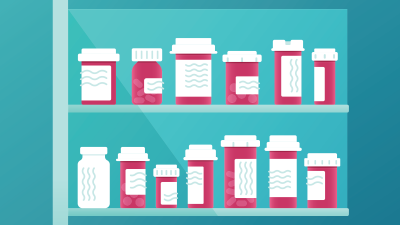
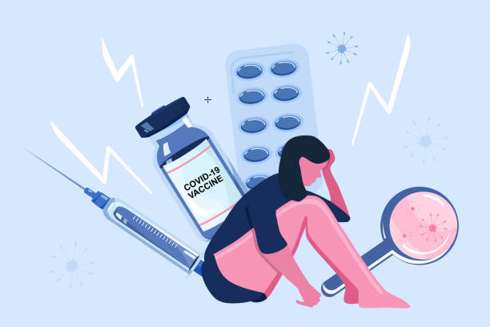
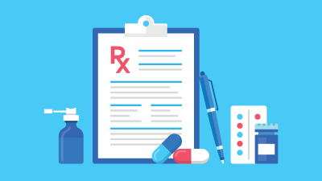
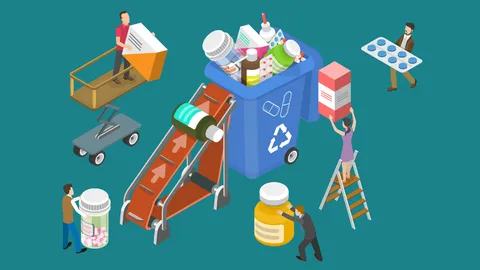
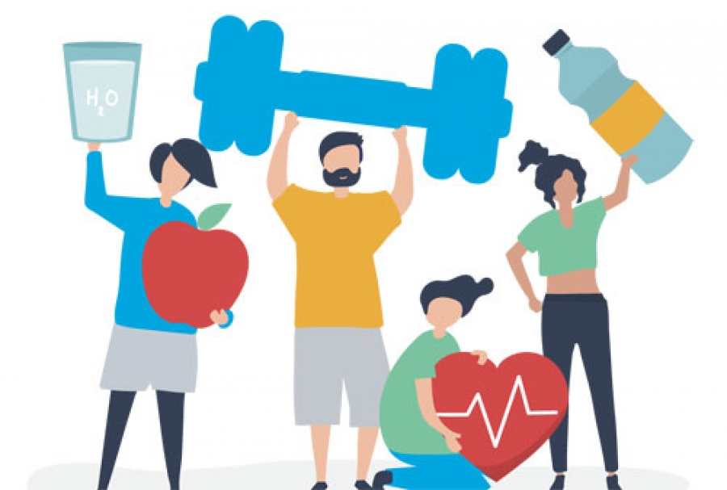
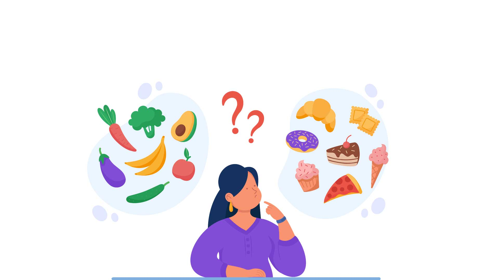
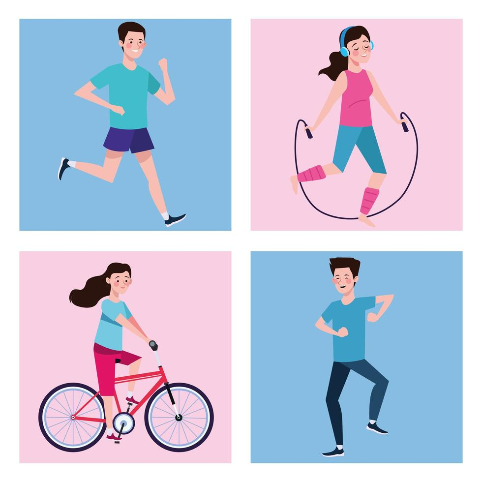
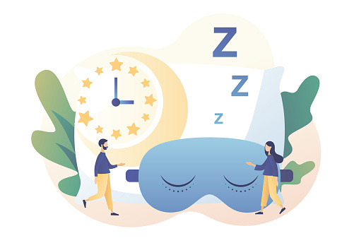

Medicina al alcance
de todos.
DIRECCION
Tome su medicamento con regularidad y de acuerdo con las instrucciones de su proveedor de atención médica. no omita una dosis ni deje de tomar un medicamento recetado sin consultarlo antes con su proveedor, incluso si se siente mejor o si cree que el medicamento no está funcionando.

El almacenamiento adecuado es una forma de asegurarse de que sus medicamentos sigan siendo seguros y eficaces. Los medicamentos que no se almacenan adecuadamente pueden no funcionar tan bien como antes o pueden causar daños, incluso si no están vencidos. Es mejor guardar la mayoría de los medicamentos en un lugar fresco y seco, como un cajón alto de un tocador, una caja de almacenamiento, un estante del armario o un gabinete de la cocina, manteniéndolos alejados de los electrodomésticos y fregaderos calientes.

Algunos medicamentos pueden causar efectos secundarios que imitan otros problemas de salud, como dificultades de memoria, mareos y somnolencia. Incluso los alimentos y bebidas comunes pueden causar interacciones graves con los medicamentos.

Anote lo que está tomado y lleve la lista con usted. Asegúrese de que su lista de medicamentos esté actualizada e incluya cualquier cambio realizado por su proveedor de atención médica. Si ve a más de un proveedor de atención médica, comparta su lista de medicamentos con cada uno para que conozcan todos sus medicamentos recetados. Una revisión de sus medicamentos con su proveedor de atención médica puede ayudarle a evitar interacciones entre medicamentos, reducir el riesgo de efectos secundarios y disminuir los costos.

Deseche de forma segura todos los medicamentos. Lea la etiqueta del medicamento para conocer las formas seguras de deshacerse de los medicamentos viejos o sobrantes. Muchas farmacias, centros de control de intoxicaciones, estaciones de seguridad pública y consultorios médicos aceptan medicamentos viejos para su eliminación segura.

Hábitos saludables para cuidar el cuerpo
La Organización Panamericana de la Salud (OPS),que actúa como Oficina regional de la Organización Mundial de la Salud (OMS) para las Américas, recomienda no esperar a que una enfermedad se trate, sino hacer del cuidado de la salud algo cotidiano.

La OPS indica aumentar el consumo de frutas y verduras a, por lo menos, cinco raciones diarias (400 gramos). También incluye legumbres (como lentejas y frijoles), nueces y granos integrales (como maíz, avena, trigo y arroz integral). Además, también es importante reducir el consumo de azúcares y grasas, especialmente grasas saturadas y trans.

La actividad física regular es clave para prevenir y controlar las enfermedades cardíacas, la diabetes tipo 2 y el cáncer, así como para reducir los síntomas de depresión y ansiedad, el deterioro cognitivo, mejorar la memoria y la salud cerebral. La OMS recomienda al menos 150 a 300 minutos de actividad aeróbica moderada a vigorosa por semana para todos los adultos y un promedio de 60 minutos por día para niños y adolescentes.

Una noche de sueño de calidad es capaz de reducir el estrés y el riesgo de problemas como diabetes, hipertensión e incluso infartos.El sueño es fundamental para que el cuerpo cumpla con diferentes tareas, como la regulación hormonal, la restauración del sistema inmunológico y la preservación de las neuronas. Los adultos deben dormir 7 o más horas por noche regularmente para promover una salud óptima.
Entre los trastornos mentales, la depresión ocupa una posición de liderazgo, seguida de la ansiedad. Como la salud del cuerpo y la mente están vinculadas, la OMS indica que hábitos como la práctica de actividad física, evitar el consumo de sustancias como el alcohol y el tabaco, y una buena alimentación son algunas de las precauciones para tener una buena salud mental.
PREOCUPADOS POR TENER:
CLIENTES SATISFECHOS.
Medicina al alcance
de todos.